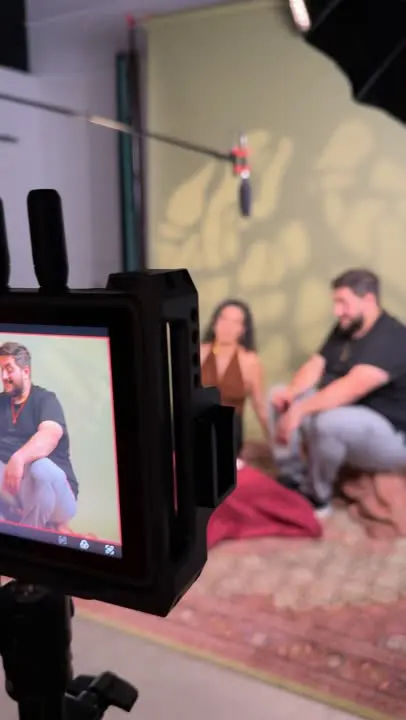
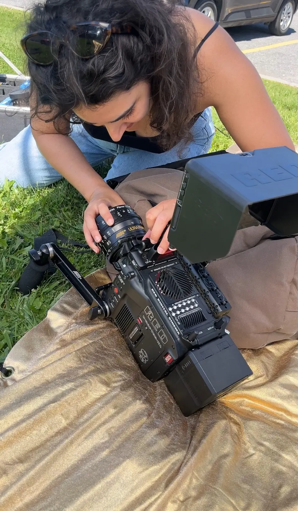
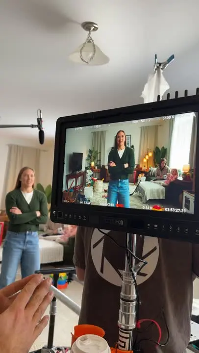
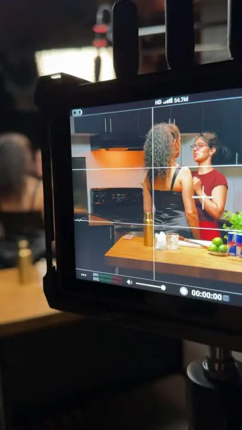
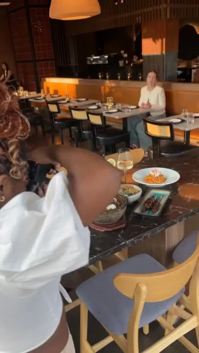

Preview, not live. The words are drafts from our November 4 meeting, for you to rewrite. Grey text in [brackets] is still to fill in.Everything in blue is still to fill in.
Creative direction and production for video series, podcasts and more.
Waiting on permission
Adventures in Consciousness
Jack Heynen
Creative direction, project management and production
An educational YouTube series on consciousness in everyday life.
Where it started
Jack came to us with “I want to create a YouTube.” Underneath was a bigger purpose: his message, and later speaking and teaching.
What we did
We shaped the message and the structure of the series, brought in a videographer and an editor, and stayed the link between Jack and the crew. We also made the print pieces that carry the series further.
What came of it
10 chapters, a closing episode and an intro, public on Jack’s YouTube channelChecked October 19, 2026
We also step into productions, events and shoots to capture the work as it happens. That photo and video becomes a bank of real content that keeps a project going long after the day itself.





Have an idea that needs a team around it?
Tell us where it is now. We’ll take it from there together.